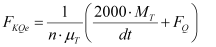
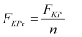
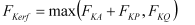
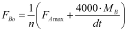
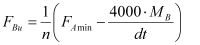
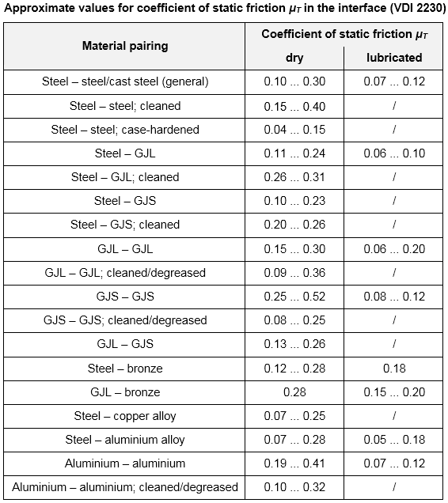

|
|
|


带扭矩和力的法兰连接（多螺栓）
对于法兰连接，单螺栓上的力（承受扭矩和/或剪切力和/或弯矩和/或轴向力作用）根据 [93] 计算，部分还根据 [84] 计算，例如 8.4：
|  | (42.7) |
|  | (42.8) |
|  | (42.9) |
|  | (42.10) |
|  | (42.11) |
| dt | 节圆直径 |
| n | 螺栓数量 |
| μT | 被连接件之间的摩擦系数（参见图 42.2） |
| FQ | 配置上的剪切力 |
| FAmax | 配置上的轴向力（最大） |
| FAmin | 配置上的轴向力（最小） |
| FBo | 承受最大应力螺栓上的上部工作力 |
| FBu | 承受最大应力螺栓上的下部工作力 |
| FKP | 配置密封载荷 |
| MB | 配置上的弯矩 |
| MT | 配置上的扭矩 |
| FKerf | 所需夹紧载荷 |
| FKQ | 所需夹紧载荷（例如用于摩擦夹紧） |
| FKP | 确保密封所需的夹紧载荷（在内压下） |
| FKA | 防止偏心载荷下开口所需的夹紧载荷 |
如果您选择法兰连接配置，我们强烈建议您将被夹紧件的几何形状定义为单个环形段。
经验表明，VDI 2230 的结果对于法兰连接通常非常保守。要获得更符合实际的结果，您应该增大各零件之间的摩擦系数。

图 42.2：根据 [1] 的界面静摩擦系数
Flange connection with torque and forces (multiple bolts)
The forces on the single bolt in the case of flanged joints (with stress from torque and/or shearing force and/or bending moment and/or axial force) are calculated according to [93], and also partially according to [84], for example, 8.4:
| (42.7) | |
| (42.8) | |
| (42.9) | |
| (42.10) | |
| (42.11) |
| dt | Pitch circle diameter |
| n | Number of bolts |
| μT | Coefficient of friction between the bolted parts, (see Figure 42.2) |
| FQ | Shearing force on configuration |
| FAmax | Axial force on configuration (maximum) |
| FAmin | Axial force on configuration (minimum) |
| FBo | Upper operating force on the bolt that is subject to the greatest stress |
| FBu | Lower operating force on the bolt that is subject to the greatest stress |
| FKP | Configuration sealing load |
| MB | Bending moment on configuration |
| MT | Torque on configuration |
| FKerf | Required clamp load |
| FKQ | Required clamp load (e.g. for friction grip) |
| FKP | Clamp load required to ensure sealing (at internal pressure) |
| FKA | Clamp load required to prevent gaping under eccentric load |
If you select a flanged joint configuration, we strongly recommend that you define the geometry of the clamped parts as individual annulus segments.
Experience shows that the results of VDI 2230 are usually very conservative for flanged connections. To achieve realistic results, you should increase the coefficient of friction between the parts.
Figure 42.2: Interface coefficients of static friction according to [1]